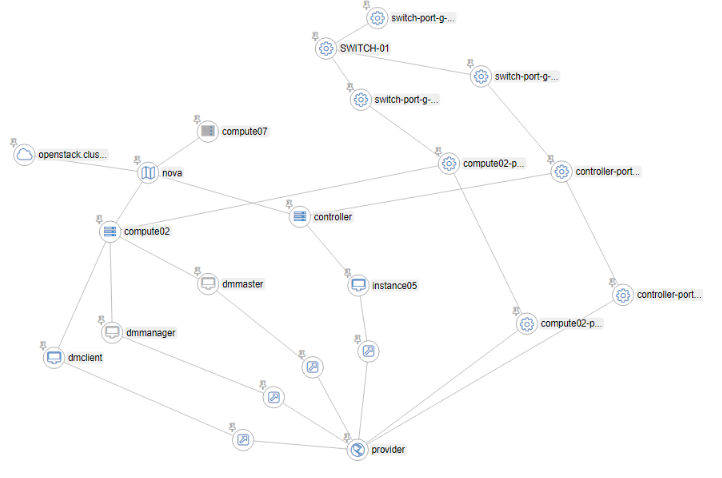
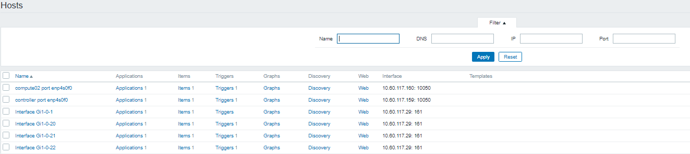

Với mục đích tổ chức resource, phân tích alarm của vitrage thì chức năng hiển thị ra graph là tính năng quan trọng nhất của vitrage. Graph được vitrage hiển thị có thể đưa ra mô hình các thực thể hệ thống, state + relation giữa các thực thể. 
1. Hoạt động tạo graph¶
2 thành phần đóng góp hoạt động chính trong tạo graph này là vitrage datasouce-driver và vitrage graph.
Vitrage datasource-driver trách nhiệm :
- Thu thập thông tin của các service trong hệ thống (nova, neutron, cinder, heat,..), đưa ra được các thực thể (entity) và mối quan hệ (relationships) giữa chúng.
Mỗi thực thể có thể là :
- một resource : host, volume, stack,…
- một alarm : aodh alarm, zabbix alarm, nagios alarm
(alarm hay resoucre được phân biệt bởi thuộc tính “category” của thực thể.)
- Đồng thời cũng nó định nghĩa ra cách chuyển hóa thông tin này về các đổi tượng đỉnh, cạnh và gọi đến vitrage graph để hiển thị
Mỗi datasouce driver định nghĩa 2 class: Driver Class, Transformer Class - Driver Class : Định nghĩa cách lấy thông tin về thực thể: resources (physical, virtual) ; alarms (Aodh, Nagios, Zabbix…) các sự cách thức lấy thông tin - Transformer Class: Định nghĩa cách đưa được thông tin đó vào đồ thị, như: với mỗi sự kiện cần thêm, sửa xóa các đỉnh, cạnh như thế nào
Khi khởi tạo graph, datasouce driver gọi “get-all” - lấy về toàn bộ thông tin hệ thống hiện tại. Bằng cách tạo các client gọi đến api của mỗi service (nova, neutron,…)
Defaut cứ 10 phút, diver lại snapshot dữ liệu hiện tại và gọi get-all một lần
Khi có sự thay đổi trong hệ thống : vd thêm bớt host, có aodh alarm. Vitrage nhận biết bởi 1 trong 2 cách: - polling mechanism: gọi đến hàm get_changes - định nghĩa trong Driver Class - pushing mechanism: đọc được messeage từ message queue mà service đó gửi lên, topic “vitrage_notifications” ( chỉ có static datasouce driver dùng polling - tức sẽ đọc từ thư mục- hoặc trong database; các datasouce khác đều sử dụng pushing mechaism)
Xem thêm về cách viết 1 datasouce tại : https://github.com/openstack/vitrage/blob/stable/queens/doc/source/contributor/add-new-datasource.rst
Vitrage graph có trách nhiệm:
Kết nối với networkx để trình diễn đồ thị cho người dùng. Đồng thời nó cũng trả lời các truy vẫn đồ thị của khi các thành phần khác hỏi đến (vd vitrage-evaluator gọi khi thực hiện các kịch bản deduce-alarm; rca)
Các loại datasouce:¶
- openstack datasource: aodh, ceilometer, cinder, heat, neutron, nova.
- extenal monitor datasource: collectd, zabix, nagios, doctor.
- static datasource: đọc thông tin từ các file cấu hình người dùng cấp
Cách vitrage chuẩn hóa thông tin về trạng thái của các thực thể từ datasouce:
https://github.com/openstack/vitrage/blob/stable/queens/doc/source/contributor/alarm-severity-config.rst
https://github.com/openstack/vitrage/blob/stable/queens/doc/source/contributor/resource-state-config.rst
Các openstack datasource thì ta chỉ cần cấu hình oslo messaging notifications vào topic vitrage_notifications; 2 nguồn còn lại thiết đặt có phức tạp hơn được đề cập ở dưới đây.
Cách cấu hình static datasource:¶
Mục đích thêm static datasource là giúp người dùng bổ sung vào đồ thị các thực thể chưa quản lý bởi bất kỳ datasouce nào khác, nó có thể mô tả cho đối tượng physical, virtual hoặc application vd: switch, route, service,…
Thêm vào /etc/vitrage/vitrage.conf:
[static]
directory = /etc/vitrage/static_datasources/
changes_interval = 10
Trong đó directory nơi chứa các file yaml khai báo static; changes_interval 10s cho biết vitrage sẽ kiểm tra thay đổi trong thư mục 10s một lần
Template cho khai báo cho static datasouce có dạng:
metadata:
name: name template
description: description
definitions:
entities:
- static_id: s1
type: switch
id: 12345
name: switch-1
state: active
...
- static_id: h1
type: nova.host
id: 1
state: active
purpose: CI
...
relationships:
- source: s1
target: h1
relationship_type: attached
Mục metadata: khai báo thông tin của tài liệu
Mục definitions: khai báo các thực thể muốn thêm vào:
- entities: danh sách thực thể muốn thêm , trong đó:
static_id: id dùng trong template, phạm vi nằm trong 1 template, mục đích như tên viết gọn
type: kiểu resource, có thể khai báo bất kỳ kiểu nào, có thể là kiểu có sẵn: openstack.cluster, nova.zone, nova.host, nova.instance, cinder.volume, neutron.network, neutron.port, heat.stack ; hay kiểu riêng tùy người dùng, vd port-switch, port-host,…
id: định danh, id và type cơ bản sẽ là ánh xạ 1 phần tử từ thế giới thực vào graph
name: tên resource
state: giá trị tùy chọn, nếu là resource đã có sẵn trong đồ thị ta không cần khai báo vào. Nhưng nếu đây lần đầu resource thêm vào thì buộc phải có, thường để giá trị là active hoặc avalable
- relationships: quan hệ giữa các thực thể :
source, target : static id của thực thể nguồn, đích
relationship_type: có thể nhận bất kỳ giá trị nào. Thể hiện mối quan hệ 2 thực thể (hay nhãn của cạnh nối 2 đỉnh
Tuy nhiên để về sau viết template cho chính xác, relationship_type thường liên quan đến type của source và target. Dưới đây là các quan hệ được quy ước ngầm của các datasoucre sẵn có của vitrage:
- ‘on’ : aodh (alarm) on nova.instance.
- ‘contains’ : openstack.cluster contains nova.zone ; nova.zone contains nova.host ; nova.host contains nova.instance ; neutron.network contains neutron.port
- ‘attached’ : nova.instance attached cinder.volume ; nova.instance attached neutron.port
- ‘comprised’: heat.stack comprised nova.instance ; heat.stack comprised cinder.volume ; heat.stack comprised neutron.network ; heat.stack comprised neutron.port
Để mô tả các entity vật lý : hiện có switch, port switch, port host, em có khai báo trong các file static datasource config các type entity:
- switch : tương ứng với switch
- port_switch: port gắn với switch
- port_host : port vật lý gắn với host
- port_ovs : port virtual tạo với ovs
Một số relationship_type em đặt tương ứng cho các static entity khi trên:
- ‘attached’ : port_switch attached switch ; port_host attached nova.host ; port_ovs attached neutron.network
- ‘connect’ : port_switch connect port_host ; port_host connect port_ovs
(việc tách biệt từng loại port như vậy thấy sẽ có lợi tránh nhập nhằng khi viết template sau này)
Ví dụ add static cho mô hình như hình vẽ đầu bài viết: cluster có 2 host, được gắn vào cùng switch trên port enp4s0f0 , đồng thời mỗi port này đều kết nối vitrual port br-provider : Ta cấu static datasource như sau:
Thêm file /etc/vitrage/static_datasources/port_host-controller.yaml : thêm static các port của host 1
Thêm file /etc/vitrage/static_datasources/port_host-compute02.yaml : thêm static các port của host 2
Thêm file /etc/vitrage/static_datasources/port_switch-01.yaml : thêm static các port của switch
Thêm file /etc/vitrage/static_datasources/connect_port.yaml : biểu thị mối quan hệ kết nối của các port host vào port switch
Cách cấu hình zabbix datasouce:¶
Mục đích là giúp vitrage có được các thông tin monitor từ các nguồn physical: port, host từ nguồn external datasource (zabbix) mang về
Cài đặt zabbix : https://www.digitalocean.com/community/tutorials/how-to-install-and-configure-zabbix-to-securely-monitor-remote-servers-on-ubuntu-16-04
Cấu hình mapping các alarm tại thực thể vật lý của zabbix vào thực thể trên graph:
- 1.Thiết lập monior port trên zabbix:
- Cấu hình zabbix để phát hiện một port của switch down
- Cấu hình zabbix để phát hiện một port của host down
- (mỗi port của switch cấu hình tương ứng 1 zabbix host, mỗi port của host cũng cấu hình thành 1 zabbix host)
- 2.Cấu hình để khi triger zabbix bật lên sẽ gửi cảnh báo về vitrage ( gửi vào rabbitmq)
- Ref: https://docs.openstack.org/vitrage/latest/contributor/zabbix_vitrage.html
- 3/Thiết lập tại vitrage
-
Thêm vào file /etc/vitrage/vitrage.conf:
``` [datasources] snapshots_interval = 300
Names of supported plugins (list value)¶
types = zabbix,nova.host,nova.instance,nova.zone,static,aodh,cinder.volume,neutron.network,neutron.port,heat.stack
[zabbix] url = http://
/zabbix password = zabbix user = admin config_file = /etc/vitrage/zabbix_conf.yaml ``` -
Mapping các thực thể của zabbix quản lý vào các static resource entity vitrage đã cấu hình .
Vd: theo như mô hình như trên hình , ta mapping các port của host, switch zabbix monitor vào các static datasource . Tại zabbix đã tạo đủ các host:
 Thêm file zabbix_conf.yaml:
```
cat /etc/vitrage/zabbix_conf.yaml
zabbix:
- zabbix_host: controller port enp4s0f0
type: port
name: controller-port-enp4s0f0
- zabbix_host: compute02 port enp4s0f0
type: port
name: compute02-port-enp4s0f0
- zabbix_host: Interface Gi1-0-21
type: port
name: switch-port-g-1-0-21
- zabbix_host: Interface Gi1-0-20
type: port
name: switch-port-g-1-0-20
- zabbix_host: Interface Gi1-0-22
type: port
name: switch-port-g-1-0-22
```
Một số lỗi đã gặp¶
Ref¶
https://docs.openstack.org/vitrage/latest/contributor/static-config.html https://docs.openstack.org/vitrage/latest/contributor/add-new-datasource.html https://docs.openstack.org/vitrage/latest/contributor/configuration.html